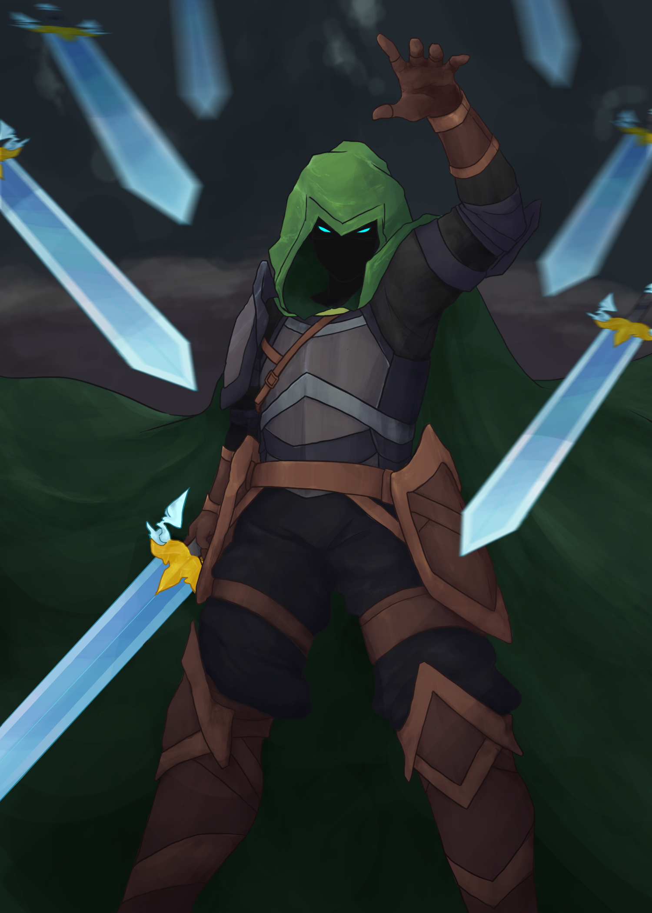

the wanderer
For an art contest, I illustrated a Realm of the Mad God character, the Wanderer. The Wanderer was a core part of the game's events at the time, so I thought it was a thematic piece.
To aid my illustration, I took a reference picture myself to have a better idea of anatomy/posing; this was inspired by a particular attack. For the interpretation of the Wanderer herself, I went with a mix of leather and dulled metal armor. The background was inspired by the Hidden Interregnum. I experimented a bit more with a softer warm lighting in this piece, as well as the Gaussian blur on the swords. Overall, I think it turned out well, and was a good learning experience in adding more depth/atmosphere to my art.
Adobe Photoshop; September 2022